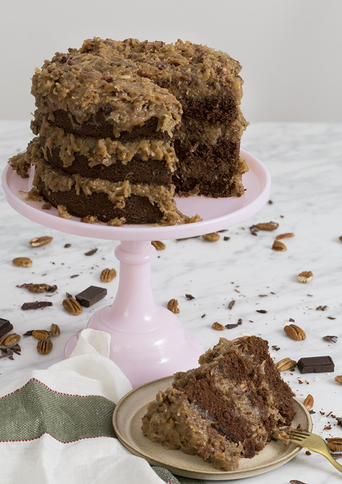

12/Feb
German Chocolate Cake
This rich and tender German chocolate cake is slathered in a coconut pecan frosting that's beyond addictive and totally delicious!
I tested this recipe over, and over, and over again until it was perfect! The cake just MELTS in your mouth and that frosting is heaven on earth!
Pro tips for this recipe
-
Measure your flour correctly! Adding too much flour to the recipe is the most common mistake. The best, and easiest way to measure flour is by using a scale. If you don’t have one then fluff your flour with a spoon, sprinkle it into your measuring cup, and use a knife to level it off.
-
Whip those egg whites up last and lighten the batter by whisking in 1/4 of that fluff into the batter before folding in the rest.
-
To get FLAT layers that are moist inside and out try using cake strips! You can buy a set on the shop page or make your own from foil and paper towels at home. I made a whole blog post on it so check it out if you’re interested!
-
If you’re out of buttermilk try adding two tablespoons of lemon juice or white vinegar to whole milk. I made a whole post on how to make your own buttermilk.
-
The frosting is traditionally made with pecans but you can use walnuts or even chopped macadamias if preferred.
-
Double the frosting, you’ll thank me!
German chocolate cake is named after Samuel German, the inventor of a type of dark chocolate (not the country). German chocolate cake has a lighter chocolate taste, a delicate, tender crumb, and of course lots of that amazing coconut pecan frosting.
You can leave this cake out overnight if covered but it’s best to refrigerate if storing for any time longer than that. Let your cake come to room temperature before serving for optimum enjoyability. First, you’ll want to toast the pecans at 350 degrees for about 8-10 minutes. Combine the sugar, milk, egg yolks, and salt in a saucepan over medium heat until the mixture thickens. Lastly, give those toasted pecans a rough chop and stir them into the mixture with the coconut. Delicious!